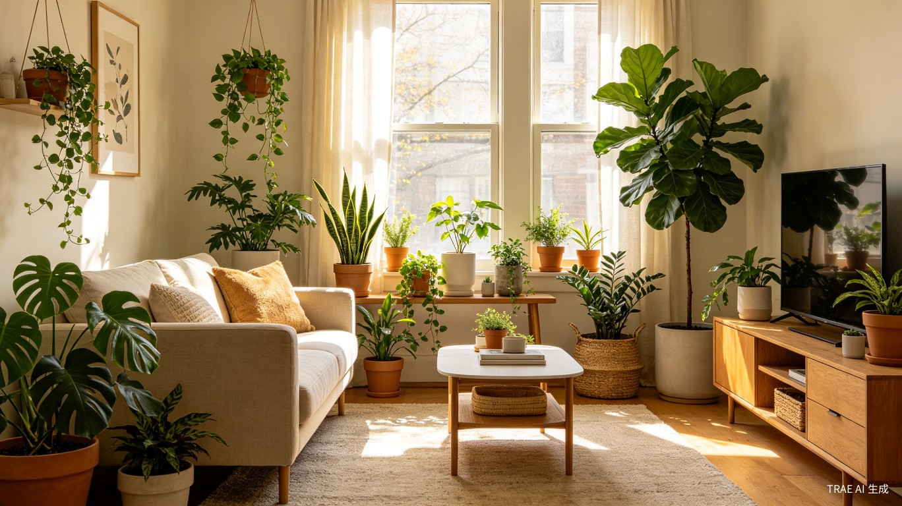

精选养护指南
最受欢迎的入门文章，帮你快速上手植物养护



最受欢迎的入门文章，帮你快速上手植物养护
从零开始养植物，你最关心的问题都在这里
强烈推荐虎皮兰、绿萝或金钱树（ZZ Plant）。这三种植物极度耐旱耐阴，即使你经常忘记浇水，它们也能活得好好的。虎皮兰被称为"卧室制氧机"，绿萝水培土培都能活，金钱树则几乎不需要阳光。建议先从一盆开始，等有了信心再逐步增加。
90%的情况是浇水太多。室内植物不像户外植物那样水分蒸发快，盆土长时间潮湿会导致根系缺氧腐烂。记住一个黄金法则：等盆土表面2-3厘米干透了再浇水。可以用手指插入土壤测试，或者使用土壤湿度计。花盆底部必须有排水孔，积水是烂根的头号杀手。
叶子发黄有多种原因：浇水过多（整片黄，软塌塌）、浇水过少（叶缘干枯卷曲）、光照不足（新叶小而黄）、缺肥（老叶先黄）。先检查土壤湿度和光照条件，找到原因再对症下药。不要一看到黄叶就猛浇水，那只会让情况更糟。
需要，但大多数室内植物喜欢明亮的散射光而非直射阳光。朝南窗户光照最强，适合仙人掌和多肉；朝东或朝西窗户适合大多数观叶植物；朝北窗户光线最弱，只能养耐阴品种如虎皮兰、绿萝。如果家里光照不足，可以考虑使用植物补光灯。
新手最容易犯的错误就是施肥太多。室内植物施肥遵循"薄肥勤施"原则：在生长季（春夏季）每2-4周施一次稀释到一半浓度的液体肥即可。秋冬季植物进入休眠期，完全不需要施肥。过量施肥会导致烧根、叶尖焦枯，比不施肥的危害更大。
记住这几个要点，养植物其实很简单
大多数室内植物死于浇水过多。不确定时，宁可少浇也不要多浇。
把植物放在合适的光照位置。朝南窗户光照最强，朝北最弱。
每天花一分钟看看你的植物。叶子发黄、下垂都是它在向你求救。
植物生长需要时间。不要频繁移动它或过度干预，给它时间适应环境。
科学证明，绿植带来的好处远超你的想象
根据NASA的清洁空气研究，室内植物可以有效吸收空气中的甲醛、苯、三氯乙烯等有害物质。虎皮兰和吊兰是公认的空气净化能手，一盆虎皮兰就能净化10平方米卧室的空气。绿萝对甲醛的吸收率高达73%。在刚装修完的房间放几盆绿萝和虎皮兰，能显著改善空气质量。
哈佛大学的一项研究发现，在室内摆放植物可以将工作效率提升15%，注意力集中度提升20%。绿色能够缓解眼疲劳，植物的存在还能降低压力激素水平。《环境心理学杂志》的研究表明，在有植物的房间里工作的人，血压更低，情绪更稳定。这就是为什么越来越多的办公室开始引入"绿色工位"概念。
英国皇家园艺学会的研究显示，每周花30分钟照顾植物的人，焦虑水平降低37%。给植物浇水、擦拭叶片、观察新叶的生长，这些简单的行为能让人从快节奏的生活中暂时抽离。植物的生长是慢的、安静的——这种节奏本身就是一种治愈。
大多数室内植物通过蒸腾作用向空气中释放水分，可以将室内湿度维持在40%-60%的理想范围。龟背竹、蕨类植物和吊兰的加湿效果尤其明显。在干燥的冬季或空调房内，几盆植物就是天然的加湿器，有助于预防皮肤干燥和呼吸道不适。
绿植是最经济实惠的家居装饰品。一盆龟背竹或琴叶榕能让整个角落变得有生命力。植物不是静态的装饰——它们会生长、发新叶、甚至开花。这种生命力是任何人造装饰品都无法替代的。而且一盆绿萝只需要十几块钱，却能陪伴你数年之久。